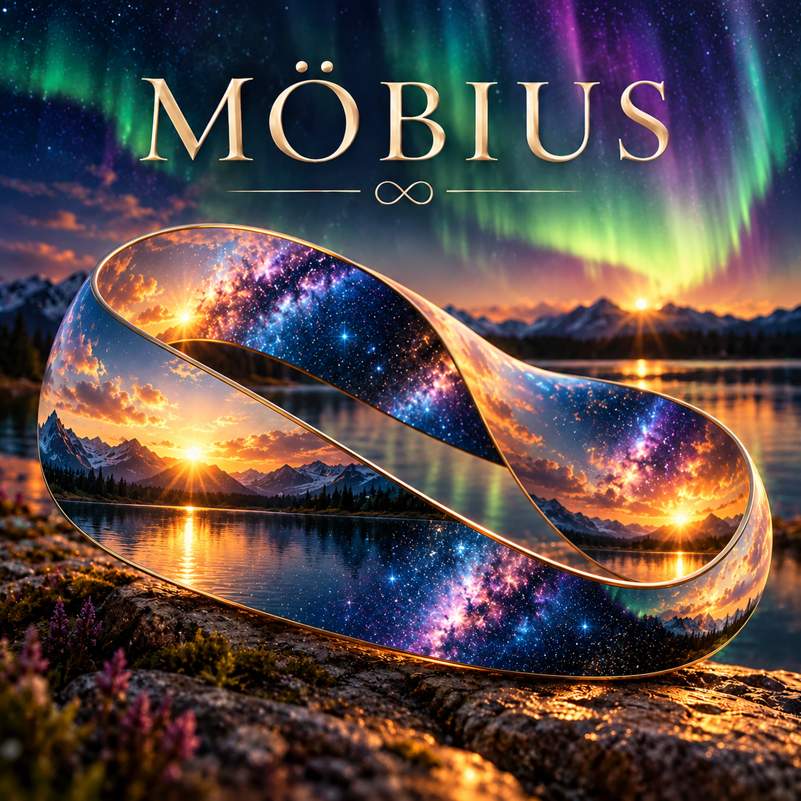

Möbius

Lyrics
Verse 1
There's a song sparked an instance
The song begat a lesson which
Explained the Experience
And the instance taught the lesson
And the lesson became the song.
Chorus
A single strip connected, twisted before it's done
The edges all one, flowing with the bend.
What is connected is never undone,
One continuous journey that never ends.
Verse 2
And the thing is I never saw it coming
I was whining about being distracted
My mind was doing all kinds of running
And then what was missing is extracted...
Then the song I wanted came along.
Chorus
A single strip connected, twisted before it's done
The edges all one, flowing with the bend.
What is connected is never undone,
One continuous journey that never ends.
Bridge
The beginning and the end complete,
Yet neither can stand alone.
The experience becomes the lesson,
And the lesson becomes known.
The song unfolds what I was taught,
Before I knew what I would find.
God's hand was present in every thought
One continuous design
Final Verse
One becomes done, another takes its place,
Each revealing what's not there before.
And what becomes is known through grace,
One continuous truth unfolding more.
Chorus
A single strip connected, twisted before it's done
The edges all one, flowing with the bend.
What is connected is never undone,
One continuous journey that never ends.
Devotional
Möbius — One Continuous Design
“For now we see through a glass, darkly; but then face to face: now I know in part; but then shall I know even as also I am known.” — 1 Corinthians 13:12 (KJV)
Have you ever returned to a familiar passage of Scripture and discovered something you hadn’t recognized before?
The words haven’t changed. But another passage, another experience, or a deeper understanding of God’s Word has brought something into clearer view.
Scripture has a remarkable way of illuminating Scripture.
Consider Paul’s declaration in 2 Corinthians 12:10:
“For when I am weak, then am I strong.”
At first, those words seem contradictory. How can weakness become strength?
But read the preceding verse. Christ tells Paul, “My grace is sufficient for thee: for my strength is made perfect in weakness.”
The apparent contradiction becomes an opportunity for understanding. Paul’s strength rests in the power of Christ.
One verse illuminates another.
And so it is throughout Scripture. God’s Word invites us to examine, compare, consider, and grow in understanding.
Proverbs 4:18 describes the path of the just as a shining light, growing brighter toward the perfect day. The image reminds us of the increasing clarity that accompanies a life directed toward God.
Jesus promised His disciples that the Spirit of truth would guide them into truth (John 16:13). We, too, must approach Scripture prayerfully, depending upon God rather than our own understanding alone.
Isaiah 28:9–13 presents the language of instruction coming line upon line and precept upon precept, within a warning about hearts unwilling to receive God’s Word. It reminds us that receiving instruction matters as much as hearing it.
And Paul acknowledges the limits of our present understanding in 1 Corinthians 13:9–12. We know in part. The fullness of understanding awaits us.
There is humility in that recognition—and encouragement to keep learning.
The song, Möbius, illustrates something of this unfolding discovery.
A Möbius strip has one continuous surface and one continuous edge. Follow its edge, and eventually you return to your starting point, having traveled farther than you might have imagined.
The song grew from an experience that became a lesson. The lesson became a song, and the song revealed something more about the experience.
That same pattern began appearing among other songs. One raised a question that another helped illuminate. A new understanding brought fresh perspective to something written earlier.
The connections multiplied.
Yet the greater invitation is to recognize how God’s Word brings understanding to our lives.
Ephesians 2:10 declares that we are His workmanship, created in Christ Jesus unto good works. Philippians 1:6 assures believers that the good work God begins, He will carry through to completion.
Together, these passages direct our attention toward His purpose and His faithfulness.
We may recognize only a small portion of what God is accomplishing at any given moment. But we can continue seeking Him through His Word, trusting His guidance as our understanding grows.
Return to the Scriptures. Read the surrounding verses. Follow the references. Look for the connections.
A familiar passage may illuminate another. A difficult question may lead to a deeper study. And something once puzzling may become clearer when viewed in the light of God’s Word.
The song offers an illustration.
Scripture offers the truth.
Prayer
Heavenly Father,
Thank You for the gift of Your Word and for the truth You reveal through it.
Give us hearts willing to receive Your instruction, patience to study what we do not yet understand, and wisdom to recognize how Your Word speaks to every part of our lives.
Guide us by Your Spirit. Help us search the Scriptures faithfully, recognize Your continuing work, and grow in the knowledge of Jesus Christ.
May everything we create and share lead others closer to You and Your Word.
In Jesus’ name, Amen.
Extra Info — Scripture Map (KJV)
Philippians 1:6 — God faithfully continues the work He begins.
Isaiah 28:9–13 — God’s instruction, and the importance of receiving His Word.
John 16:13 — The Spirit of truth guides into truth.
Proverbs 4:18 — The path of the just grows brighter.
1 Corinthians 13:9–12 — We know in part, awaiting fuller understanding.
Ephesians 2:10 — We are God’s workmanship, created in Christ Jesus for good works.
2 Corinthians 12:9–10 — God’s strength is made perfect in weakness.